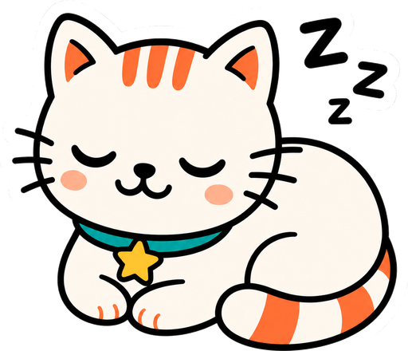

Dijeda👋 Lambaian terdeteksi!
👋 Mau bikin intro perkenalan?
Loading...
Tunjukkan tangan ke kamera 👋
Memuat model...
😸
—
Riwayat emosi
Belum ada...
Confidence per emosi
⭐
Challenge Mode
Tunjukkan gesture yang diminta dalam 4 detik. Punya 3 nyawa — jaga mereka!
✋ Gesture = jumlah jari
☝️ 1 · happy✌️ 2 · sad🤟 3 · angry🖖 4 · surprised🖐️ 5 · excited
❤️ ❤️ ❤️